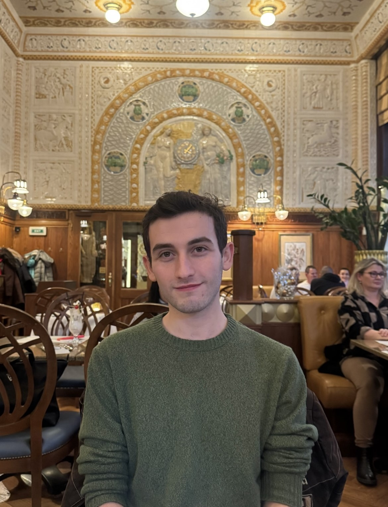

Welcome to my resume!
My name is Jonah Musher-Eizenman. I am a senior studying computer science at Boston University. I also currently work with Levain Bakery as a technology consultant. Within this website you will have the opportunity to read about my previous and current employment history, educational background, projects, along with many other aspects of my professional history.